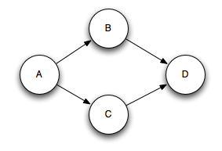

Stormは、ベストエフォート、at least once、そしてTridentによるexactly onceなど、メッセージ処理の保証レベルをいくつか提供しています。 このページでは、Stormがat least onceを保証する方法について説明します。
Spoutから流れるタプルは、それに基づいて何千ものタプルを作成するトリガになりえます。たとえば、ストリーミングによるワードカウントをおこなうトポロジを考えてみます。
TopologyBuilder builder = new TopologyBuilder();
builder.setSpout("sentences", new KestrelSpout("kestrel.backtype.com",
22133,
"sentence_queue",
new StringScheme()));
builder.setBolt("split", new SplitSentence(), 10)
.shuffleGrouping("sentences");
builder.setBolt("count", new WordCount(), 20)
.fieldsGrouping("split", new Fields("word"));
このトポロジは、Kestrelのキューから文を読み込み、文をその構成要素の単語に分割し、その単語の出現した回数を各単語ごとに出力します。Spoutから流れるタプルは、それに基づいて作成される多くのタプルをトリガします: 文中の各単語のタプルと、各単語の更新された回数のタプルです。メッセージのツリーは次のようになります。

Stormは、タプルツリーが使い果たされ、ツリー内のすべてのメッセージが処理されたときにSpoutから流れてくるタプルを「完全に処理された」とみなします。タプルは、メッセージのツリーが指定されたタイムアウト内で完全に処理されないと失敗したとみなされます。このタイムアウトは、Config.TOPOLOGY_MESSAGE_TIMEOUT_SECSの設定を使用してトポロジー固有に設定でき、デフォルトは30秒です。
この質問を理解するために、Spuotから流れ出るタプルのライフサイクルを見てみましょう。参考までに、Spuotが実装するインタフェースを以下に示します（詳細は、Javadocを参照してください）。
public interface ISpout extends Serializable {
void open(Map conf, TopologyContext context, SpoutOutputCollector collector);
void close();
void nextTuple();
void ack(Object msgId);
void fail(Object msgId);
}
まず、Stormは、Spoutに対してnextTupleメソッドを呼び出すことによって、Spoutにタプルを要求します。Spoutは、SpoutOutputCollectorのopenメソッドを使用して、出力ストリームの1つにタプルを送出します。タプルを送出するとき、Spoutは後続でタプルを識別するために使われる"メッセージID"を付与します。例えば、KestrelSpoutは、Kestrelキューからメッセージを読み込み、メッセージのKestrelから提供されたidを「メッセージid」として出力します。SpoutOutputCollectorにメッセージを送出するところは、次のようになります:
_collector.emit(new Values("field1", "field2", 3) , msgId);
次に、タプルはコンシューマであるBoltに送られ、Stormは作成されたメッセージのツリーを追跡します。Stormは、タプルが完全に処理されたことを検出すると、SpoutというメッセージIDを使用して、元のSpoutタスクでackメソッドを呼び出します。同様に、タプルがタイムアウトした場合は、StormがSpoutのfailメソッドを呼び出します。タプルはそれを作成したのとまったく同じSpoutタスクによってackされるか、failすることに注意してください。したがって、Spoutがクラスタ全体で多くのタスクを実行している場合でも、タプルはそれを作成したタスクとは異なるタスクによってackまたはfailすることはありません。
メッセージ処理を保証するためにSpoutが何をする必要があるかを見るためにKestrelSpoutをもう一度使ってみましょう。KestrelSpoutがKestrelキューからメッセージを取り除くと、メッセージを"open"します。実際には、メッセージがまだキューから取り出されているわけではありませんが、メッセージが完了したことを確認するのを待っている"pending"の状態になります。保留中の状態では、キューの他のコンシューマにはメッセージは送信されません。加えて、クライアントがそのクライアントのすべての保留中のメッセージを切断すると、キューに戻されます。メッセージがopenされると、Kestrelはクライアントにメッセージのデータとメッセージの一意のIDを提供します。KestrelSpoutは、SpoutOutputCollectorにタプルを送出する際に、そのIDをタプルの "メッセージID"として扱います。その後、KestrelSpoutでackまたはfailが呼び出されると、KestrelSpoutはackまたはfailメッセージをメッセージIDと共にKestrelに送り、キューからメッセージを取り除くか、それを元に戻します。
Stormの信頼性に関する機能を利用するには、ユーザーとして2つのことを行う必要があります。まず、タプルのツリーに新しいリンクを作成するときは必ずStormに伝える必要があります。次に、個々のタプルの処理が終了したら、Stormに伝える必要があります。これらの両方を実行することで、Stormは、タプルのツリーが完全に処理されたこと、タプルがackまたはfaliしたことを適切に検出することができます。 StormのAPIは、これらのタスクの両方を簡潔に行う方法を提供します。
タプルツリーにリンクを指定することはanchoringと呼ばれています。Anchoringは新しいタプルを発行するのと同時に行われます。例として、次のBoltを使用しましょう。このBoltは、文を含むタプルを各単語のタプルに分割します:
public class SplitSentence extends BaseRichBolt {
OutputCollector _collector;
public void prepare(Map conf, TopologyContext context, OutputCollector collector) {
_collector = collector;
}
public void execute(Tuple tuple) {
String sentence = tuple.getString(0);
for(String word: sentence.split(" ")) {
_collector.emit(tuple, new Values(word));
}
_collector.ack(tuple);
}
public void declareOutputFields(OutputFieldsDeclarer declarer) {
declarer.declare(new Fields("word"));
}
}
それぞれの単語についてのタプルは、emitへの最初の引数として入力となるタプルを指定することによってanchoredされます。単語タプルがアンカーされているので、単語のタプルが下流で処failした場合、ツリーのルートにあるタプルが後で再生されます。これとは対照的に、単語タプルが次のように生成されるとどうなるかを見てみましょう:
_collector.emit(new Values(word));
このように単語タプルを発行すると、それはunanchoredになります。タプルが下流の処理でfailした場合、ルートにあるタプルは再生されません。トポロジに要求するフォールト・トレランスの保証によっては、unanchoredなタプルを発行することが適切な場合もあります。
出力タプルは、ひとつ以上の入力タプルにアンカーできます。これは、ストリーミング結合または集約を実行する場合に便利です。処理が失敗したマルチアンカータプルは、複数のタプルをSpoutからreplayします。マルチアンカリングは、単一のタプルではなくタプルのリストを指定することによって行われます。例えば:
List<Tuple> anchors = new ArrayList<Tuple>();
anchors.add(tuple1);
anchors.add(tuple2);
_collector.emit(anchors, new Values(1, 2, 3));
マルチアンカリングは、出力となるタプルを複数のタプルツリーに追加します。マルチアンカリングでツリー構造を破壊し、次のようなタプルのDAGを作成することも可能です:

Stormの実装は、DAGとツリーにおいて機能します（プレリリース版ではツリーのみ、名前は「タプルツリー」と呼ばれていました）。
アンカーは、タプルツリーを指定する方法のことです。Stormの信頼性APIの最後の要素は、タプルツリー内の個々のタプルの処理が完了したときの指定です。これは、OutputCollectorにおいてackと failメソッドを使用することによって行われます。SplitSentenceの例を振り返ってみると、すべての単語タプルが出力された後に入力タプルが確認されていることが分かります。
OutputCollectorにfailメソッドを使うと、Spoutから来たタプルツリーのルートに対して直ちにタプルを失敗させることができます。たとえば、アプリケーションでデータベースクライアントから例外をキャッチした際に、入力となるタプルを明示的に失敗させることもできます。タプルを明示的に失敗させることにより、タプルがタイムアウトするのを待つのよりも速く、送出されたタプルをリプレイさせることができます。
処理するすべてのタプルはackさせるかfailさせる必要があります。Stormはメモリを使用して各タプルを追跡するため、タプルごとにack/failを実行しないと、タスクは最終的にメモリ不足になります。
多くのBoltは、入力タプルを読み込み、それに基づいてタプルを送出し、 executeメソッドの終了時にタプルをackするという共通のパターンに従います。これらのBoltは、フィルタとシンプルな機能のカテゴリに分類されます。Stormにはこのパターンをカプセル化するBasicBoltというインターフェースがあります。SplitSentenceの例は次のようにBasicBoltとして書くことができます:
public class SplitSentence extends BaseBasicBolt {
public void execute(Tuple tuple, BasicOutputCollector collector) {
String sentence = tuple.getString(0);
for(String word: sentence.split(" ")) {
collector.emit(new Values(word));
}
}
public void declareOutputFields(OutputFieldsDeclarer declarer) {
declarer.declare(new Fields("word"));
}
}
この実装は、前の実装よりも簡単であり、意味的には同じです。BasicOutputCollectorに送出されたタプルは入力であるタプルに自動的にanchorされ、タプルへのackはexecuteメソッドが完了する際に自動的に実行されます。
対照的に、集約または結合を行うボルトは、タプルのまとまりに基づいて結果を計算し終わるまで、タプルへのackを遅らせる可能性があります。集約と結合は、一般に複数の出力タプルもanchorします。 これらはIBasicBoltが提供する簡単なパターンには当てはまりません。
ソフトウェア設計における通例通り、答えは「状況による」ということです。exactly onceのセマンティクスが必要なら、Trident APIを使用してください。場合によっては、分析をおこなうユースケースの大部分と同様に、データをdropすることは問題はになりません。そのような場合は、Config.TOPOLOGY_ACKERSでackerボルトの数を0に設定してフォールトトレランスを無効にします。しかし、場合によっては、すべてがat least onceで処理され、dropされないことを確認する必要があります。これは、すべての操作が冪等である場合、または重複が後続処理においてのみ発生する可能性がある場合に特に便利です。
Stormのトポロジには、SpoutタプルごとにタプルのDAGを追跡する特別な"acker"タスクが複数あります。ackerは、DAGが完了したことを確認すると、spoutタプルにackメッセージを送信します。 Config.TOPOLOGY_ACKERSを使用して、トポロジのackerタスクの数を設定できます。Stormのデフォルト設定では、TOPOLOGY_ACKERSをworkerごとに1つのタスクとして割り当てます。
Stormの信頼性に関する実装を理解する最善の方法は、タプルとタプルが形成するDAGのライフサイクルを調べることです。タプルがトポロジ内に生成された場合、SpoutかBoltかに関わらず、ランダムな64ビットのIDが与えられます。これらのIDは、Spoutタプルごとにタプルが形成するDAGを追跡するためにackerで使用されます。
すべてのタプルは、そのタプルツリーに存在するすべてのSpoutタプルのIDを認識します。Boltで新しいタプルを送出すると、そのタプルのanchorからspoutタプルIDが新しいタプルにコピーされます。タプルがackされると、タプルツリーがどのように変更されたかに関する情報とともに適切なackerタスクにメッセージを送信します。特に、ackerに「私は今、このSpoutタプルのツリーにおいて完了しました、そして私にanchorされたツリーの新しいタプルがあります」と伝えます。
たとえば、タプル"D"と"E"がタプル"C"に基づいて生成されている場合に、"C"がackされるとタプルツリーがどのように変化するかを次に示します:

"D"と"E"が追加されるのと同時に"C"がツリーから削除されるので、ツリーが中途半端な状態で完了することはありません。
Stormがタプルツリーをどのように追跡するかについて、さらに詳細がいくつかあります。すでに述べたように、トポロジには任意の数のackerタスクを配置できます。これは、次の質問につながります。タプルがトポロジ内でackされたとき、タプルはその情報がどのackerタスクから送信したのかをどのようにして知るのか？
Stormはmodハッシュを使用してSpoutタプルのIDをackerタスクに対応付けします。すべてのタプルには、そこに存在するすべてのツリーのSpoutタプルIDが含まれているため、どのackerタスクが通信するのかがわかります。
Stormのもう1つの詳細は、SpoutタスクがどのSpoutタプルの追跡を担当しているかについて、ackerタスクがどのように追跡しているかです。Spoutタスクが新しいタプルを送出するとき、単に適切なackerに対して、タスクIDがそのSpoutタプルのものであるとするメッセージを送信します。そうすると、ackerは、ツリーが完了したことを確認した際に、どのタスクIDに完了メッセージを送信するべきかを知っていることになります。
Ackerタスクは、明示的にタプルのツリーを追跡しません。数万（またはそれ以上）のノードを持つ大きなタプルツリーの場合、すべてのタプルツリーを追跡すると、ackerによってメモリが大量に使用される可能性があります。代わりに、ackersはSpoutタプルごとに固定量（約20バイト）のスペースしか必要としない戦略を採用します。この追跡アルゴリズムは、Stormがどのように機能するか、そしてその主要なブレークスルーであることを示す鍵です。
ackerタスクは、SpoutタプルのIDから対をなす値対する対応付けを保持します。値のひとつめは、後で完了メッセージを送信するために使用されるSpoutタプルを生成したタスクIDです。2番目の値は"ack val"と呼ばれる64ビットの数値です。ack valは、大きさにかかわらず、タプルツリー全体の状態を表すものす。これは、単純にツリー内おいて生成ならびにackされた/されなかったすべてのタプルIDのxorです。
ackerタスクは、 "ack val"が0になったことを検知すると、タプルツリーが完了したものとします。タプルIDはランダムな64ビットの数値なので、"acker val"が誤って0になる可能性は極端に低いと言えます。数学的に考えると、1秒間に一万回ackが実行されるとするなら、間違いが起こるまで5千万年かかるでしょう。仮にそうなったとしても、トポロジでタプルがfailした場合にのみデータが失われます。
信頼性アルゴリズムについて理解していただけたので、すべての失敗が起こりうる事例について説明し、それぞれの場合にStormがデータ損失を回避する方法を見てみましょう:
ご覧のとおり、Stormの信頼性メカニズムは完全に分散され、スケーラブルで、フォールトトレラントです。
Ackerタスクは軽量であるため、トポロジではあまり多くのAckerタスクを必要としません。Storm UIを使用してパフォーマンスを追跡できます（コンポーネントIDは"__acker"です）。スループットが適正でないと思える場合、より多くのackerタスクを追加する必要があります。
信頼性が重要でない場合 -- つまり、障害発生時にでタプルを失うことに気にしない場合は、Spoutタプルのタプルツリーを追跡しないことでパフォーマンスを向上させることができます。通常、タプルツリー内のすべてのタプルにackメッセージがあるので、タプルツリーをトラッキングしないことで転送されるメッセージの数が半分になります。加えて、各下流のタプルで保持するID数が少なくなるので、帯域幅の使用量を削減することができます。
信頼性を取り除くには3つの方法があります。最初は、Config.TOPOLOGY_ACKERSを0に設定します。この場合、Spoutがタプルを出力した直後に、StormはSpout上でackメソッドを呼び出します。タプルツリーは追跡されません。
2番目の方法は、メッセージ単位で信頼性を取り除くことです。SpoutOutputCollector.emitメソッドにおいてメッセージIDを送出しないことで、個々のSpoutタプルのトラッキングをオフにすることができます。
最後に、トポロジにおける下流のタプルの特定のサブセットについての処理が失敗することを気にしない場合は、それらのタプルをAnchorされていないタプルとして送出できます。SpoutタプルにAnchorされていないので、それらがackされなくともSpoutタプルが失敗することはありません。